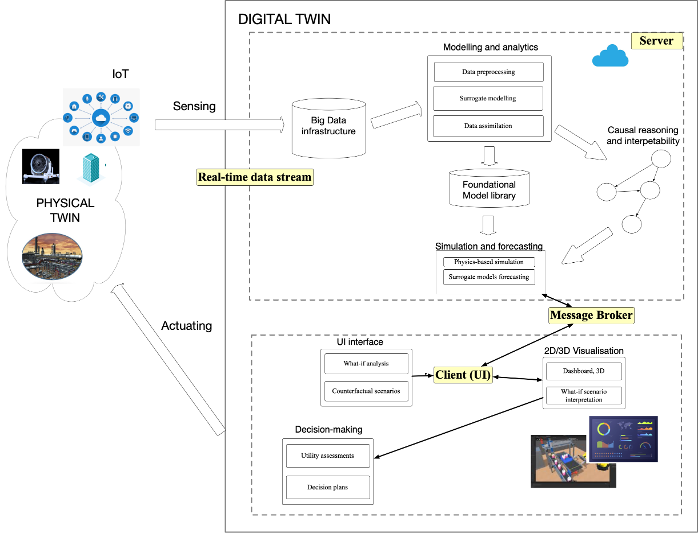

EDITS
Enhancing Digital Twins with Scalable and Interpretable AI
F.R.S.-FNRS WEL-T Investigator Programme · 2025–2029 · 48 months
Project Overview
EDITS is a research project funded by the F.R.S.-FNRS WEL-T Investigator Programme (Call 2024), running from 2025 to 2029. The project aims to integrate recent advances in Artificial Intelligence and Machine Learning into the Digital Twin domain, focusing on scalable data processing, adaptive learning, multi-step-ahead forecasting, and causal reasoning.
Led by Prof. Gianluca Bontempi at the Machine Learning Group (MLG), Université libre de Bruxelles (ULB), EDITS addresses open challenges in Digital Twin technology by developing AI/ML methodologies for calibration of physics-based models, learning high-dimensional surrogate data-driven models, causal interpretation, big data streaming analytics, and forecasting.

Research Aims
Big Data Analytics
Design a big data analytics infrastructure to support Digital Twin systems in real-time data streaming and processing.
Physics-Based Model Calibration
Develop data assimilation and calibration techniques to calibrate physics-based models with large variate data streams.
Foundational Models
Define a foundational model approach for transferring knowledge across similar configurations and physical systems.
Causal Discovery & Inference
Apply causal inference and discovery to add interpretability and counterfactual reasoning to surrogate models.
Simulation & Forecasting
Validate methodology through multi-variate multi-step-ahead forecasting with uncertainty characterization.
Case Studies
Three real-world case studies: IoT devices, TrafficTwin for smart cities, and EnergyTwin for wind farms.
Explore case studies →At a Glance
147
Man-Months of research effort across 6 Work Packages